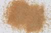

|
|
(For further information on spectroscopy, see:
http://speclab.cr.usgs.gov)
TITLE: Spessartine HS112 Garnet DESCRIPT
DOCUMENTATION_FORMAT: MINERAL
SAMPLE_ID: HS112
MINERAL_TYPE: Nesosilicate
MINERAL: Spessartine (Garnet group)
FORMULA: Mn3Al2(SiO4)3
FORMULA_HTML: Mn3Al2(SiO4)3
COLLECTION_LOCALITY: Haddon, Connecticut
ORIGINAL_DONOR: Hunt and Salisbury Collection
CURRENT_SAMPLE_LOCATION: USGS Denver Spectroscopy Laboratory
ULTIMATE_SAMPLE_LOCATION: USGS Denver Spectroscopy Laboratory
SAMPLE_DESCRIPTION:
Forms series with Almandine.
"Spessartite 112B--Haddon, Conn. Mn3Al2(SiO4)3: Spessartite is less common than many garnets, occurring primarily in metamorphic rocks and granite pegmatites. The dominant features in the spectrum are the intense bands at 1.275 and 1.7 µ due to the presence of ferrous iron in eight-fold coordination, as discussed above. The visible spectrum falls off sharply to the blue producing a maximum near 0.8 µ. In the larger particle sizes this feature shows a shoulder near 0.9 µ, indicating the presence of Fe3+. While the visible spectrum displays the very sharp feature at 0.41 µ characteristic of Mn2+ absorption, the rest of its usually distinctive spectrum is degraded by the presence of absorptions by both Fe3+ and Fe2+. Together these 3 ions can account for the bands at 0.37, 0.43 µ, the broad general absorption centered near 0.55 µ, and the fall off to the blue."
Hunt, G.R., J.W. Salisbury, and C.J. Lenhoff, 1973, Visible and near-infrared spectra of minerals and rocks: VI. Additional silicates. Modern Geology, v. 4, p. 85-106.
IMAGE_OF_SAMPLE:

END_SAMPLE_DESCRIPTION.
XRD_ANALYSIS:
40 kV - 30 mA, 6.7-9.5 keV
File: spes112.mdi
References: Huebner's reference patterns
Found: Garnet, minor quartz
Comments: Garnet peaks are moderately sharp. Resolution of the alpha1-alpha2 components
is not as good as might be expected from the sharpness, and slight shoulders extend
toward larger d-spacings, suggesting that slight compositional zoning may be present.
The cell dimension of the garnet is 11.65 Angstroms, consistent with a spessartine-rich
garnet.
END_XRD_ANALYSIS.
COMPOSITIONAL_ANALYSIS_TYPE: None # XRF, EM(WDS), ICP(Trace), WChem
COMPOSITION_TRACE:
COMPOSITION_DISCUSSION:
END_COMPOSITION_DISCUSSION.
MICROSCOPIC_EXAMINATION:
END_MICROSCOPIC_EXAMINATION.
SPECTROSCOPIC_DISCUSSION:
END_SPECTROSCOPIC_DISCUSSION.
SPECTRAL_PURITY: 1b2c3c4_ # 1= 0.2-3, 2= 1.5-6, 3= 6-25, 4= 20-150 microns
| LIB_SPECTRA_HED: | where | Wave Range | Av_Rs_Pwr | Comment |
|---|---|---|---|---|
| LIB_SPECTRA: | splib04a r 4510 | 0.2-3.0µm | 200 | g.s.= |
| LIB_SPECTRA: | splib05a r 6272 | 0.2-3.0µm | 200 | g.s.= |
| LIB_SPECTRA: | splib06a r 20737 | g.s.= | ||
| LIB_SPECTRA: | splib06a r 20749 | g.s.= |
{kind=link}